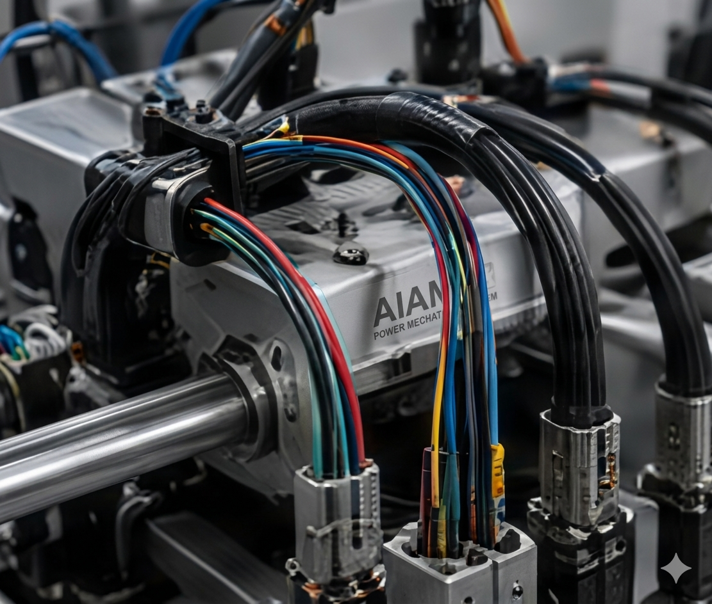
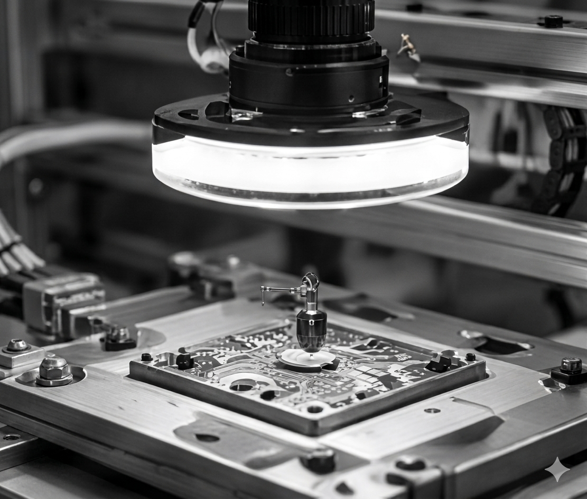
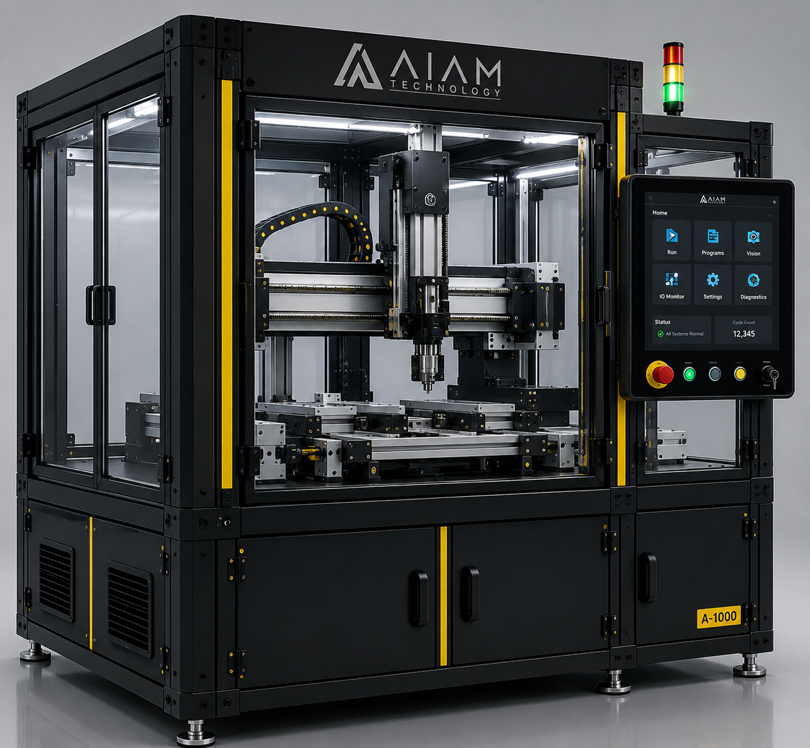
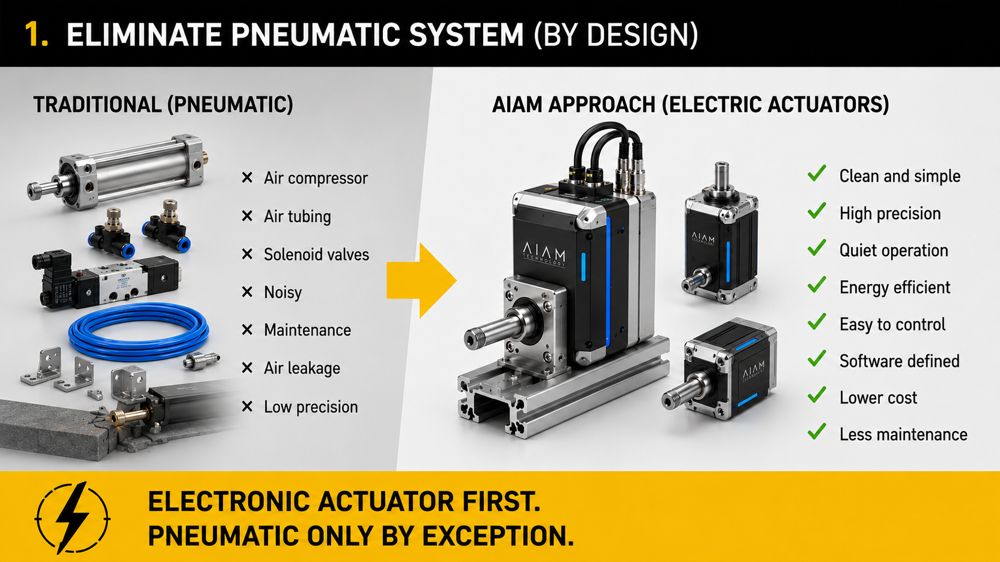
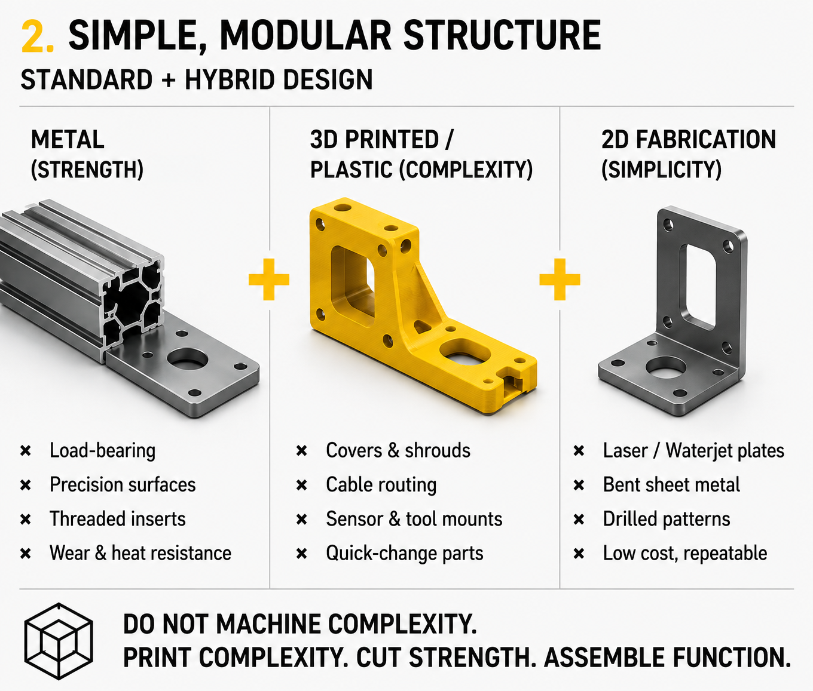
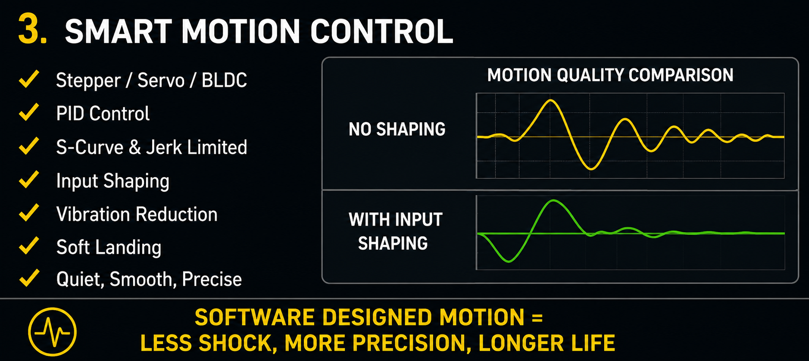
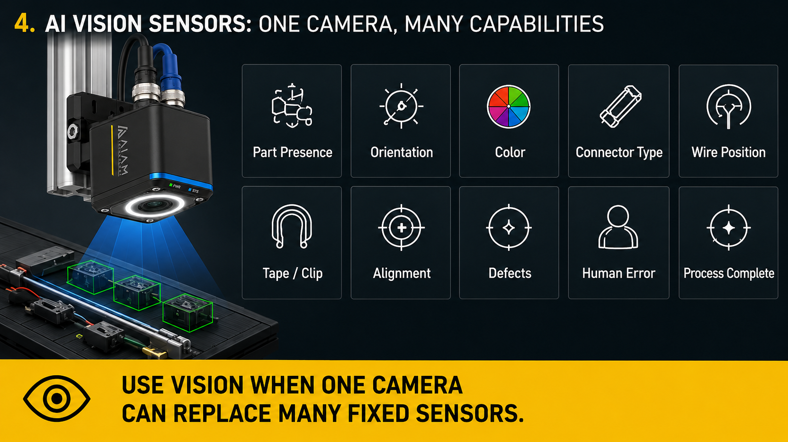
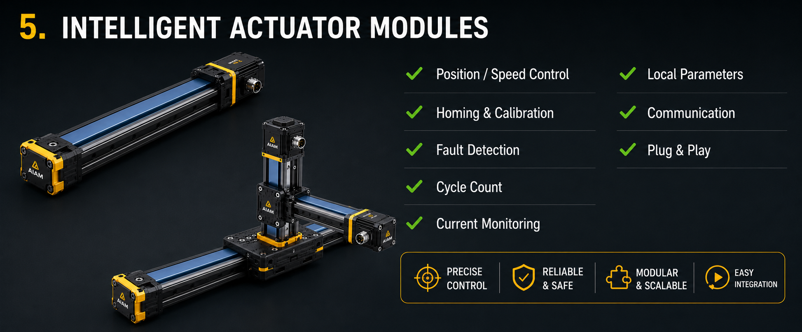
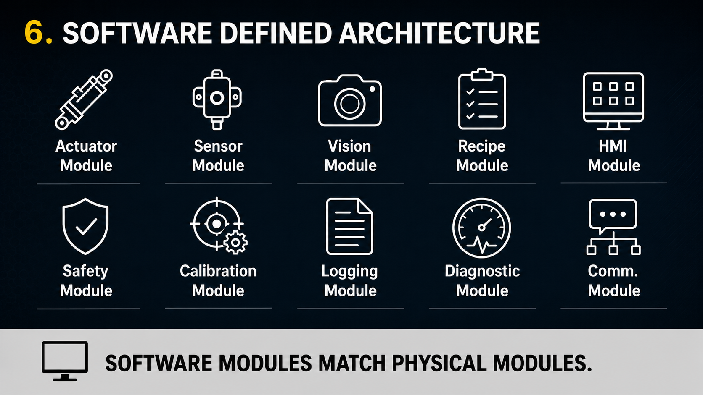
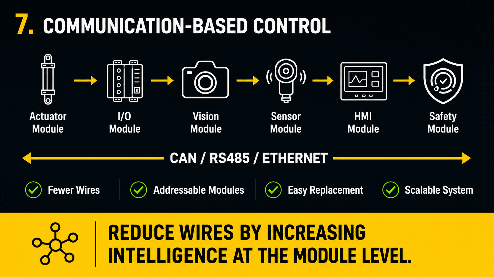

Wire Harness
Automation
Modular solutions for wire cutting, stripping, crimping, inserting, and testing—built for reliability and ease of integration.
AIAM Technology LLC
AIAM Technology LLC develops machine-side automation concepts including AI-assisted assembly, low-cost vision inspection, and practical support technologies for manufacturers.
Factories buy certainty, not ambition.


Modular solutions for wire cutting, stripping, crimping, inserting, and testing—built for reliability and ease of integration.

AI-assisted vision systems for defect detection, presence verification, and assembly validation at the machine-side.

Uninterruptible power solutions that keep machines safe, processes protected, and production moving.
About
AIAM Technology LLC designs modular Physical AI machines built on standardized manufacturing — lower cost, upgradeable, and software-defined from the first bracket to the last line of code.
“We build custom machines.”
“We build robots that act like humans.”
“We build affordable Physical AI machines that do the job directly.”
Factory automation does not need to copy the human body. Large-scale assembly needs many eyes, many actuators, fixed tools, conveyors, fixtures, and process-specific mechanisms — so we build the machine the process actually requires, combining standard mass-produced materials, simple fabrication, electronic motion, AI vision, and modular software control.
The best machine shape is the shape required by the process, not the human body.

Standard materials and simple fabrication — no heavy infrastructure.
Motion, recipes, and inspection live in software, not fixed hardware.
A machine is not finished — it is a platform for the next function.
AI must cut setup time, sensors, and errors — never just decorate.
Technology
Modular Physical AI machines built on standardized manufacturing: standard materials, electronic motion, AI vision, and modular software control — instead of expensive, rigid, one-off automation.

Pneumatic cylinders are the exception, not the default. Stepper, BLDC, and servo actuators eliminate compressors, tubing, valves, noise, and air leakage — delivering clean, quiet, precise, energy-efficient motion at lower cost.
Electronic actuator first. Pneumatic only by exception.

Aluminum extrusion, laser-cut plates, 3D-printed functional parts, and standard hardware — built on existing mass-production supply chains. Custom 3D CNC machining only when absolutely necessary, so machines stay easy to build, repair, copy, and upgrade.
Do not machine complexity. Print complexity. Cut strength. Assemble function.

Motion is designed, not just fast: PID control, S-curve and jerk-limited profiles, input shaping, soft landing, current monitoring, and stall detection. Less shock means lighter structures, quieter machines, and longer life.
Use software to remove shock from the machine.

One camera replaces many fixed sensors: part presence, orientation, color, connector type, wire position, tape and clip detection, alignment, defects, human error, and process completion — fewer sensors, fewer wires, more flexibility.
Use vision when one camera can replace many fixed sensors.

An AIAM actuator is not just a motor. Every module includes position and speed control, homing and calibration, fault detection, cycle counting, current monitoring, local parameters, and a simple command protocol — a true plug-and-play building block.
Do not build dumb motion. Build smart actuator modules.

Every machine is assembled from reusable software blocks — actuator, sensor, vision, recipe, HMI, safety, calibration, logging, and diagnostics. Changing the product means changing the recipe, not rebuilding the machine.
Software modules should match physical modules.

Instead of wiring every signal point-to-point, AIAM machines are networked over CAN, RS485, or Ethernet. Every module is addressable and replaceable — fewer wires, easier service, and a system that scales.
Reduce wires by increasing intelligence at the module level.
Product Families
Contact
Tell us what you're trying to automate. We'll tell you, honestly, whether and how we can help.